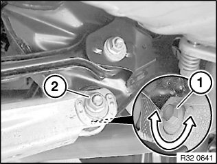
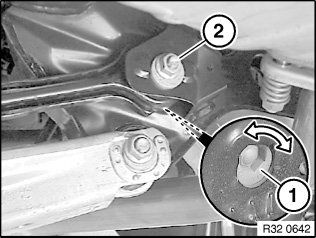

<!DOCTYPE html>
<html>
  <head>
    <title>32 00 620 Adjusting Rear Axle — 2011 BMW 128i Coupe (E82) L6-3.0L (N52K) Service Manual | Operation CHARM</title>
    <meta name='description' content="Detailed repair manual for the 2011 BMW 128i Coupe (E82) L6-3.0L (N52K).">
    <link rel='stylesheet' href="../style.css">
    <meta name='viewport' content='width=device-width, initial-scale=1.0' />
  </head>
  <body>
    <div class='theme-colors header'>
      <div class='branding'><b>Operation CHARM</b>: Car repair manuals for everyone.</div>
<div class=breadcrumbs><a class='breadcrumb-part' href="../">Home</a> <b>&gt;&gt;</b> <a class='breadcrumb-part' href="../BMW/">BMW</a> <b>&gt;&gt;</b> <a class='breadcrumb-part' href="../BMW/2011/">2011</a> <b>&gt;&gt;</b> <a class='breadcrumb-part' href="../index.html">128i Coupe (E82) L6-3.0L (N52K)</a> <b>&gt;&gt;</b> <a class='breadcrumb-part' href="0.html">Repair and Diagnosis</a> <b>&gt;&gt;</b> <a class='breadcrumb-part' href="0.html#Steering%20and%20Suspension/">Steering and Suspension</a> <b>&gt;&gt;</b> <a class='breadcrumb-part' href="1718.html">Alignment</a> <b>&gt;&gt;</b> <a class='breadcrumb-part' href="1718.html#Service%20and%20Repair/">Service and Repair</a> <b>&gt;&gt;</b> <a class='breadcrumb-part' href="11076.html">32 00 620 Adjusting Rear Axle</a></div></div>
<div class="theme-colors floaty-message lemon-message">
  <b style="font-size: 1.5em; color: gold">Manuals through 2025 now available!</b>
  <br><br>
  Our trusted friends have launched a new website named LEMON, which has newer manuals. It also contains all the CHARM manuals.
  <br><br>
  LEMON is the spiritual successor to  CHARM, I recommend you try it!
  <br><br>
  Link: <a style='white-space: nowrap' href="../missing-page">lemon-manuals.la</a> or <a style='white-space: nowrap' href="../missing-page">lemon-manuals.org.ua</a>
  <br><br>
  (Some people have issue connecting. LEMON is investigating. For now, use Firefox or change your DNS server)
  <br><br>
  Or, hide this message: <a href="../missing-page">temporarily</a> or <a href="../missing-page">permanently</a>
</div>
<div class='main'>
<h1>32 00 620 Adjusting Rear Axle</h1><b>32 00 620 Adjusting rear axle</b><br><br><div class='oxe-image'></div><br><br><br><br><span class='indent-2'>&#09;</span><b>Note:</b><br><span class='indent-2'>&#09;</span>A camber change always means a toe change as well. The camber must therefore be adjusted first.<br><br><div class='oxe-image'></div><br><br><br><br><span class='indent-2'>&#09;</span><b>Important!</b><br><span class='indent-5'>&#09;</span>Only on cars with Active Cruise Control:<br><span class='indent-5'>&#09;</span>Because the axis of motion is the reference for ACC adjustment, it is necessary after an adjustment of the rear axle which alters the axis of motion also to check the adjustment of the ACC sensor!<br><br><div class='oxe-image'></div><br><br><br><br><span class='indent-2'>&#09;</span><b>Adjusting camber:</b> <br><span class='indent-2'>&#09;</span>Replace nut (2) and tighten to 5 Nm.<br><br><span class='indent-2'>&#09;</span>Turn eccentric bolt (1) to adjust camber to setpoint value.<br><br><span class='indent-2'>&#09;</span>Tighten nut (2).<br><br><span class='indent-1'>&#09;</span>Tightening torque 33 32 9AZ.<br><br><div class='oxe-image'></div><br><br><br><br><span class='indent-2'>&#09;</span><b>Adjusting toe:</b> <br><span class='indent-2'>&#09;</span>Replace nut (2) and tighten to 5 Nm.<br><br><span class='indent-2'>&#09;</span>Turn eccentric bolt (1) to adjust toe to specified value.<br><br><span class='indent-2'>&#09;</span>Tighten nut (2).<br><br><span class='indent-2'>&#09;</span>Tightening torque 33 32 7AZ.<br><br><h3>��:</h3><div class='oxe-image'></div><br><br><br></div>
<div class="theme-colors footer">
  <i>pro multis</i> · <a href="../about.html">About Operation CHARM</a>
</div>
<script src="../script.js"></script>
</body>
</html>
